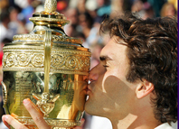
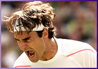
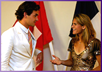
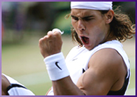
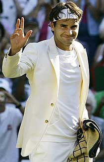
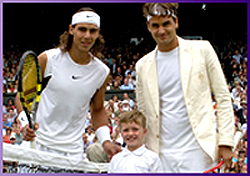

Previous: How Nadal Won the French Open 2006 | 🏠 Strategy Home | Next: How Roger Federer Won the US Open 2006
How Roger Federer Won Wimbledon 2006
Comprehensive unified tennis knowledge base — Fundamentals, Stroke Analysis, Reference Library, and more
How Roger Federer Won Wimbledon 2006
John Yandell



Courage, incredible serving, and fashion style?
Wow. It may not have been the Roger Slam, but still, what an amazing accomplishment. Think about it. If you are Roger Federer, obviously you know exactly what 4 titles in a row means--Wimbledon immortality with Bjorn Borg and Pete Sampras. Then, think about who is over there on the other side--the giant teenager with the biceps and the attitude and the winning record against you--the player that everyone says is 'in your kitchen' as a certain pro coach I know likes to put it.
And Roger pulled it off. He held it together and played such a courageous match. His serving was incredible, and he hit so many clutch shots at key times. Yeah, he made some tight errors, but it wasn't like Paris--there wasn't that same stream of almost inexplicable unforced errors on the backhand side. Plus he had that blazer going for him, which I think actually did have something to do with it. Still, I wasn't sure until almost the last point. Because it was obvious that after that first set, Nadal was hovering on the verge of turning the match around in every game. Does it sound like I was for Roger? Yes, and I want him to win in Paris too. And I want Nadal to win Wimbledon.

To what extent was Nadal actually in Roger's kitchen?
So what did the numbers show about how Roger won the match? And what were the differences between Paris and Wimbledon?
In the article last month on the French (Click Here), I said that the official statistics don't make sense sometimes. Wimbledon was one of those times. Here's what I mean. According to the Wimbledon website, Roger hit 43 winners, and Nadal made 29 unforced errors (including double faults). So that's 72 points for Roger.
In comparison, Nadal hit 42 winners, and won 33 points on Roger's unforced errors. That's 75 points for Nadal. So that's 3 more points for Nadal in the official statistics. But Federer won the match. Why don't the statistics explain the match? The answer is that those winners and errors only accounted for about 60% of the total points played.
The exact match total was 246 points played. Roger won 133. Nadal won 113. So, Roger won 20 points more than Rafael. Like most matches I've charted, the player who won the most total points won the match. But again, the winner and unforced errors only accounted for about 60% of the points. They aren't usually enough to tell the story. So, what about those other 100 or so points? Who won those and how?
Roger's serving was phenomenal.
It wasn't straight winners and errors, so what was it? Right, the Forced Errors--points Roger won by creating pressure on Nadal, or vice versa. That's the missing statistic we need to really understand what is happening in pro matches, as Patrick McEnroe keeps pointing out. A forced error is as good as a winner, and has the same value when we measure the Aggressive Margin (Click Here.)
Roger created a whopping 61 Forced Errors. He actually won more points through Forced Errors than through Winners or Unforced Errors. His total was 61 points on Forced Errors, 43 on Winners, and 29 on Unforced Errors. That adds up to his total points won: 133.
Nadal by comparison won 38 points on Forced Errors, 42 on Winners, and 33 on Unforced Errors. That adds up to his total of 113. Remember the Winners and Unforced Errors from the official statistics had the players pretty close, with Nadal ahead by 3 points. When we add in the Forced Errors it all makes sense. The big difference was the 23 more points for Federer on Forced Errors.
Winners
Forced Errors
OpponentsUnforced Errors
Total
Federer
43
61
29
133
Nadal
42
38
33
113
How did Roger create them? It was in large part his phenomenal serving. That fluid, minimal motion that we have already looked at in technical detail. (Click Here.) He hit 13 aces, but more importantly, almost 30 other serves that were unreturnable, that is, serves that were Forced Errors. So that was 43 free points, more than twice as many points as he won outright on his serve at the French. Why so many? Well, the grass for one thing. But Roger also served almost 80% for the match. Think about that about how huge 80% is in a Wimbledon final. And that serving percentage meant that he started out more points than that ahead, even when Nadal made a return.
Aggressive Margin
His serving goes a long way in accounting for the difference in his Aggressive Margin compared to Nadal. The Aggressive Margin is the other key statistic we've looked at in these articles. (Click Here.) Once again. if you add up a player's winners and forced errors and then subtract his unforced errors, that gives you the Aggressive Margin. For the match, Federer was +65 for the match or +16/set. Nadal was +44 for the match or +11/set.
Aggressive Margin
Forehand
Backhand
Net
Serve
Federer Wimbledon
+10
-0-
+12
+42
Nadal Wimbledon
+2
+12
+7
+23
But besides the serve, how did Roger get to +16/set? We saw that in Paris that Federer actually won the match statistically if you just excluded the backhand. Interestingly it was similar at Wimbledon. Roger's numbers were better on every stroke but the backhand, compared to Nadal. But the difference was that at Wimbledon he didn't have those horrifying 36 unforced backhand errors. In both matches he had 10 backhand winners. The difference was that at Wimbledon he only had 10 unforced errors, not 36.
Verus Paris: no inexplicable backhands.
Interestingly Nadal was also negative on his backhand in Paris Like Federer he had 10 backhand winners and forced errors, but 13 unforced errors, for an Aggressive Margin of -3. That was way better than Roger though who was -26. At Wimbledon Nadal did much better on his backhand. He had 22 winners and forced errors and 10 unforced errors. So, he was +12. That was better than Roger by 12 points. But it was less than the 23-point backhand advantage he had in Paris, even though they both had negative aggressive margins.
So, the difference was that, compared to Paris, Roger lost by a much smaller margin on the backhand. And he won by a much greater margin and the serve. He also won on the forehand, which was actually a reversal of Paris. He came up big with quite a few of those forehands when he really needed them. Finally, he made a few clutch volleys at key times.
Aggressive Margin
Forehand
Backhand
Net
Serve
Federer Paris
+5
-26
+13
+18
Nadal Pairs
+10
-3
+3
+18
Backhand Slice
So, what accounted for the difference in Roger's backhand? Was it the slice? That definitely had something to do with it, although you couldn't see that reflected directly in the backhand winners. Obviously, Nadal's ball was a lot lower on the grass which made it less difficult to deal with on the backhand side, but the way Roger mixed it up also seemed to have a big impact on the mental struggle.
Was the mix of slice backhands another key?
Roger still played heavily to Nadal's backhand, hitting inside in with his forehand and even hitting backhands down the line like he did in Paris. But he mixed in some crosscourt slices to Nadal's forehand, and this seemed to frustrate Nadal. It was a teaching pro's dream cliche. Hit the ball low with slice to an extreme grip forehand! And it should be especially effective on grass! How many times have you heard that? In this case the player actually did it and it actually worked.
The slice threw Nadal off enough to draw some uncharacteristic forehand errors. These were turning points in the match. For example, take the key game when Nadal served for the second set at 5-4. At 15 love, Federer hit a forehand slice return, then a low short crosscourt slice backhand. Nadal hit a loopy, wide crosscourt forehand, and then Federer stuck a backhand crosscourt drive. It should have still been a routine ball for Nadal, but the sudden change of pace seemed to throw him off. He mistimed the ball, made a bad unforced error into the net, and let out a loud, agonized groan. He hadn't sounded like that before and it meant something.
Nadal's forehand: a few errors came at critical times.
On the next point at 15-15, Federer hit a slice backhand return and then a short angled backhand crosscourt slice. Nadal made another bad forehand error. Now it was 15-30, and Nadal missed his first serve long by about 8 feet and then hit a double fault into the tape. Those were obvious signs the pressure and frustration were getting to him.
At 15-40 Federer just got his racket on Nadal's first serve and floated the return back deep down the middle. Nadal made another error hitting his forehand way long and let out another similar bellow. To me, that game was the turning point in the entire match, even though the set ended up in a tiebreaker.
In that tie breaker, there was one more key moment in the mental battle when Roger hit that crazy running forehand slice and Nadal missed a down the line forehand with the court open. That got Federer to 3-3 when it looked like Nadal might take over the breaker. But Roger blunted the onslaught.
A few clutch volleys at the right times.
There were other similar points and exchanges in the final two sets were Roger seemed able to use his variety to neutralize Nadal and then finish with that gorgeous, signature aggressive play. And his topspin backhand looked about 50 times better than in Paris, didn't it? I mean just the way he looked when he hit it--and that was reflected in the numbers.
Like McEnroe said, Nadal didn't give up even after that second set, and his will was enough to carry him through the third set and win the breaker there. But in the fourth it all caught up with him. Serving at 1-2 and 30 love, Nadal suddenly lost 4 straight points and was quickly down a break. In that game, Federer crushed two forehands. But Nadal also missed a forehand off another deep, floating slice. Then on break point Nadal hit that easy overhead out of the park. That made it 3-1 Federer.
Another difference: forcing more errors with aggressive forehand's.
Roger held for 4-1. Then immediately he added another break to go up 5-1. He really took charge in that game, running around second serves and hitting a couple of huge forehand returns, and then backing that up with a very sharp backhand volley winner and some dominant forehands, including one to finish an amazing power backcourt point that left Nadal sprawled on the grass. You could feel that the momentum had permanently tipped. On breakpoint, Roger hit another sharp forehand return and then finished with an easy high forehand volley.
Roger tightened up and immediately gave back one of those breaks in his next service game, but I still felt like he was going to get it. He wasn't going to blow serving for the match twice. In the last game his serve and his forehand came through. Nadal also made two critical unforced errors, which showed the momentum was just not going to shift back his way.
So how much of it was the court itself, and how much was it the tactics, how much was it the pressure of a first Wimbledon final for Rafael, and how much was it Roger's higher confidence level given all of these factors? And what about the blazer?

An image and a feeling--part of the mentality of a champion?
I say it was some of all of that. It seems that the pundits were somewhat right. The change in tactics seemed to pay off at critical times. But what happens the next time they play on clay? Sure Roger cleaned up his backhand errors and the match was more or less a draw from the backcourt, but I doubt Federer can be +42 on his serve in Paris, or Rome, or Monte Carlo. That'll be interesting to see. Will he try the slice on clay and what'll happen if he does? Let's hope we get the chance to find out.
The Blazer Inside the Mind
The numbers give us perspective, but maybe the real difference was in Federer's mental state on Wimbledon center court. Maybe that mental state is what produced the improved tactics and execution and the better numbers.
Or maybe it really was the blazer--don't laugh, I think that was part of the whole deal. Personally I thought it looked ultra sharp. When you look good you feel good, right? Something like that was definitely going on for Roger. I think that cream blazer had something to do with his perspective on who he was and how he felt--or wanted to feel--at Wimbledon. Remember the blazer was his idea not Nike's. He literally recreated his image in a way that tied him to tennis history. Don't try to tell me that same process is not going on with Rafael. He looks like no one else on the court--and he plays the same way. Image isn't everything, but image does reflect and influence reality.
If you've read some of the articles on the great champions of the past, (Click Here) you may have noticed the pictures of the original 'tennis blazers' that were worn by the top players all the way through the 1940s.

Another final: too much to hope for in New York?
I've been predicting for a few years that since everything in fashion is retro something or other, they'd have to be back at some point. And yes, I want one. And maybe some slacks to go with it. It could all be synthetics like normal warm-ups, with the same zippers and pockets. Think of the color possibilities, not to mention the crest on the front pocket. I'm under contract with Fila not Nike, so Michael McCrory are you listening down there in San Diego? So far as I can tell Nike isn't even selling it. I'm telling you it could be huge!
And what about New York? Federer versus Nadal in 3 Grand Slam finals in a row? That seems improbable and too much to hope for. New York is so tough and there are so many players that could put either or both of them out in the frenzy of the U.S. Open. But it COULD happen. They both seem that good. If it does it'll be the greatest spectacle yet of the Open era. At the very least I hope to see them play a couple more Slam finals in the upcoming years like the ones we've been lucky enough to witness in 2006. In fact I hope Federer wins the next time they play in Paris, and Rafa when they play in England.

John Yandell is widely acknowledged as one of the leading videographers and students of the modern game of professional tennis. His high speed filming for Advanced Tennis and Tennisplayer have provided new visual resources that have changed the way the game is studied and understood by both players and coaches. He has done personal video analysis for hundreds of high level competitive players, including Justine Henin-Hardenne, Taylor Dent and John McEnroe, among others.
In addition to his role as Editor of Tennisplayer he is the author of the critically acclaimed book Visual Tennis. The John Yandell Tennis School is located in San Francisco, California.
Source: tennisplayer.net archive — How Roger Federer Won Wimbledon 2006.docx (John Yandell teaching library, 2002-2022). Extracted and rendered as HTML for Tennis Future Lab.